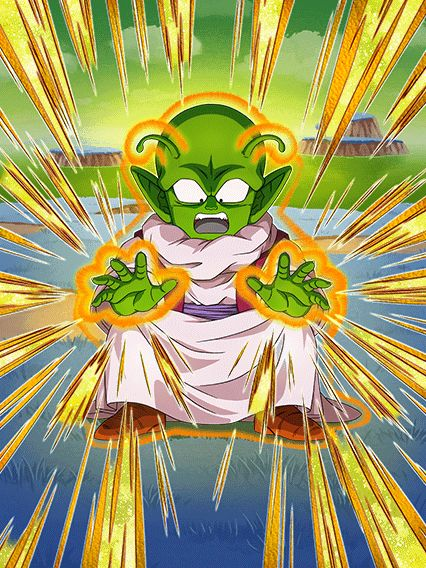
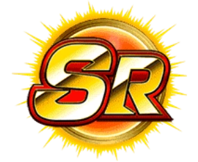
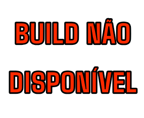
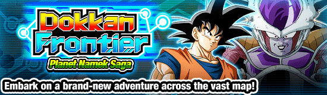

DATA DE LANÇAMENTO: 17/03/2026


Você não está lendo errado, o Dokkan fez um novo SR
E pra ser mais absurdo, é um SR F2P 😭
O Dende é o primeiro Card que não pode atacar em nenhum momento da luta, e também é o primeiro Card a ter uma Active Skill exclusiva pro Dokkan Frontier
Apesar de eu achar isso interessante, eu espero que coisas desse tipo não sejam colocadas em Cards de summon, já que estragaria muitos times
Pra um Card F2P, ele tá ótimo, já que ele tem bastante desvio, cura HP e dá suporte de Ki e 40% de DEF pra "Planet Namek Saga".
Nota dos Links:
04/10
Nota das Categorias:
04/10
CARD ADQUIRIDO NO EVENTO:

Você chegou ao fim dessa página!
Obrigado por ler tudo, e fica a vontade pra ver outras